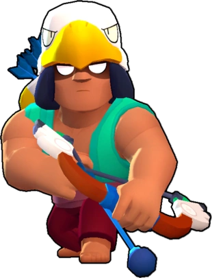

¿Quién es Bo?
Bo lleva mucho tiempo sobreviviendo en la selva. Lo más impresionante de todo es que, para ello, utiliza juguetes que compró en rebajas en la tienda de souvenirs.
Bo es un Brawler Epico que tiene una salud moderada, una inmensa utilidad con su Super y un daño potencialmente alto pero inconsistente. Ataca disparando tres flechas de largo alcance que explotan en un radio pequeño al final de su alcance. Su Super coloca tres trampas que pueden activarse para explotar un momento después al ser pisadas por un enemigo, dañando y derribando a los enemigos al explotar.
|  |
NIVEL DE FUERZA 11 |
Sus gadgets
SUPERTÓTEM: Bo coloca un tótem que aumenta la velocidad de la carga de la súper de los aliados en un 50% |
CUERDA DETONANTE: Bo activa todas sus minas tras 1,5 segundos. Mientras se activan, los rivales no tienen manera alguna de detectarlas. |
Sus habilidades estelares
 |
OJO DE ÁGUILA: Bo puede detectar a los enemigos escondidos en los arbustos a una distancia 150% mayor a la habitual. |
 |
CEPOS: En vez de desplazar al enemigo, las trampas de Bo lo aturden durante 2 segundos. |
 Braian Arancibia
Braian Arancibia Aya El Baarar
Aya El Baarar